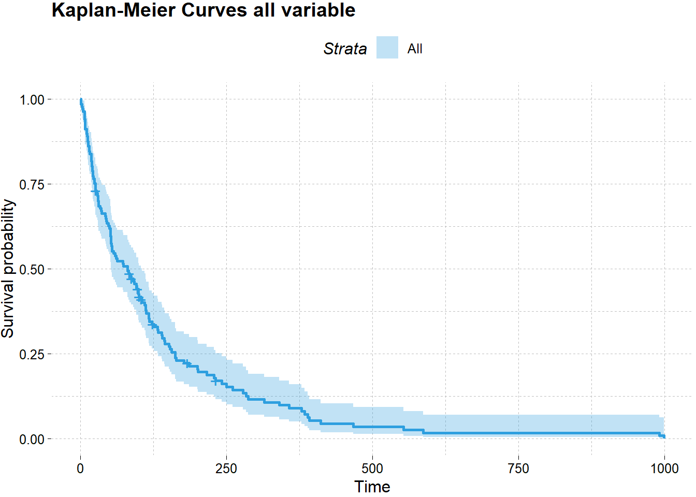
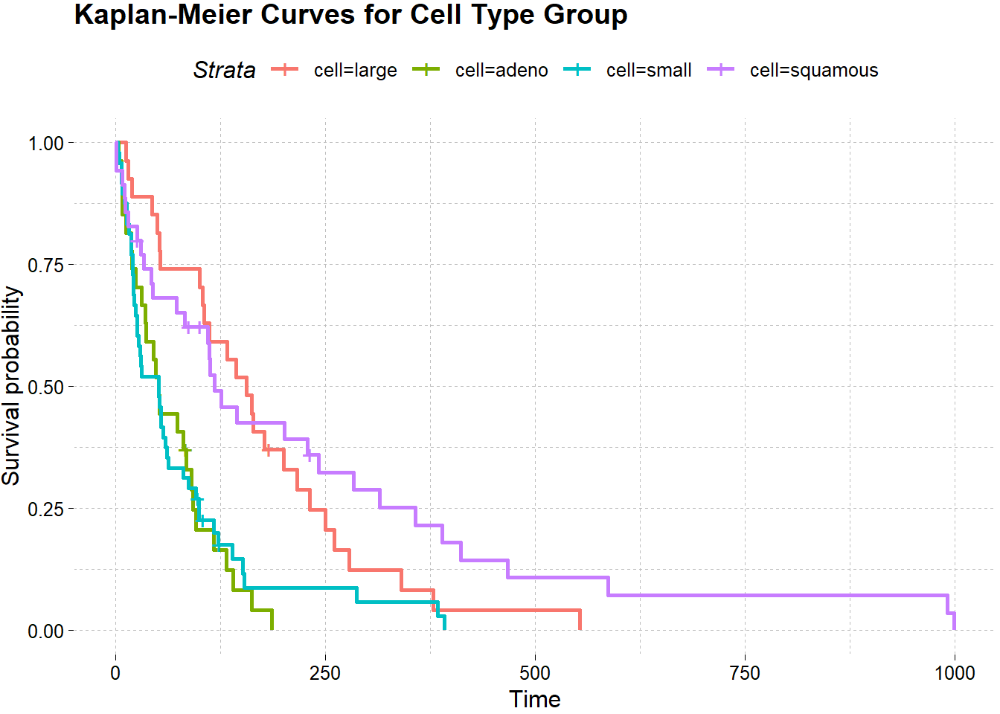
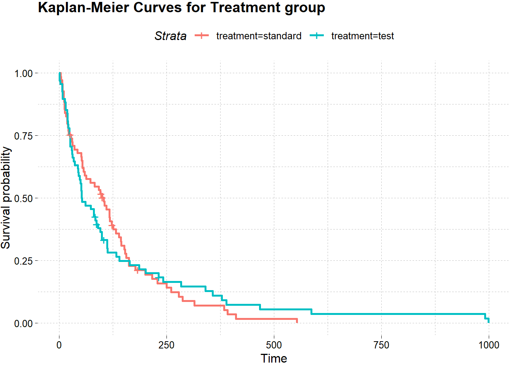

Chapter 7 Public Health
7.1 Survival Analysis of Patients with Lung Cancer
Kanker paru merupakan kanker pada organ pernapasan yang menjadi kanker pembunuh nomer satu di dunia dan Indonesia (CNN Indonesia, 2018). Data internasional dari Globocan 2018 menyatakan kanker paru adalah kanker yang paling banyak ditemukan di pria dan wanita di seluruh dunia dibandingkan jenis kanker lainnya. Pasien penderita kanker paru memerlukan penanganan yang terarah. Oleh karena itu akan dilakukan pengamatan, faktor apa saja yang mempengaruhi waktu ketahanan hidup pasien kanker paru. Metode yang digunakan adalah survival analysis, yaitu analisis statistik untuk mengambil keputusan yang berkaitan dengan waktu sampai dengan terjadinya suatu kejadian khusus (failure event/ end point).
Pada bidang studi kanker, hal yang sering jadi perhatian peneliti adalah:
- Berapa probabilitas individu/pasien untuk survive selama 3 tahun?
- Apakah terdapat perbedaan kemampuan survive antara kelompok demografi pasien?
7.1.1 Import Data
library(tidyverse)
library(survival)
library(SurvRegCensCov)
library(survminer)
options(scipen = 9999)Data yang digunakan merupakan data dummy rekam medis dari pasien kanker paru-paru. Sebanyak 137 pasien diobservasi dimana 128 mengalami event meninggal dan sisanya tersensor (dirujuk ke rumah sakit lain). Durasi waktu pengamatan menggukan satuan hari.
lung <- read.csv("assets/06-health/data-paru.csv", sep = ";")
glimpse(lung)#> Rows: 137
#> Columns: 6
#> $ treatment [3m[38;5;246m<int>[39m[23m 2, 2, 2, 1, 1, 1, 2, 2, 1, 1, 2, 2, 1, 1, 1, 1, 1, 1, 2, 2, ~
#> $ survival [3m[38;5;246m<int>[39m[23m 1, 1, 2, 3, 4, 7, 7, 7, 8, 8, 8, 8, 10, 10, 11, 12, 12, 13, ~
#> $ perform [3m[38;5;246m<int>[39m[23m 20, 50, 40, 30, 40, 50, 20, 40, 40, 20, 80, 50, 20, 40, 70, ~
#> $ age [3m[38;5;246m<int>[39m[23m 65, 35, 44, 43, 35, 72, 66, 58, 63, 61, 68, 66, 49, 67, 48, ~
#> $ status [3m[38;5;246m<int>[39m[23m 1, 1, 1, 1, 1, 1, 1, 1, 1, 1, 1, 1, 1, 1, 1, 1, 1, 1, 1, 1, ~
#> $ cell [3m[38;5;246m<int>[39m[23m 4, 4, 3, 2, 3, 3, 3, 2, 4, 2, 3, 2, 4, 3, 4, 2, 1, 3, 3, 4, ~Berikut adalah penjelasan mengenai beberapa informasi yang diamati:
treatment: 1 (standard), 2 (test)cell type: 1 (large), 2 (adeno), 3 (small), 4 (squamoues)survival: waktu pengamatan dalam haristatus: 1 (cencored / berhasil survive), 0 (meninggal)
Menurut Kementerian Kesehatan, kelompok usia yang paling berisiko tinggi mencakup pasien yang berusia > 40 tahun. Maka, pada data akan dikelompokkan menjadi dua kelompok usia.
lung <- lung %>%
rename(time = survival) %>%
mutate(
treatment = factor(treatment, levels = c(1,2), labels = c("standard", "test")),
cell = factor(cell, levels = c(1,2,3,4), labels = c("large", "adeno","small","squamous")),
age = case_when(
age > 40 ~ ">40",
TRUE ~ "<=40"
)
)7.1.2 Exploratory Data Analysis
Variabel prediktor (treatment, age, perform, cell) akan dianalisis menggunakan regresi survival. Dimana akan dilihat faktor-faktor apa saja yang mempengaruhi ketahanan hidup pasien sampai mengalami sebuah event: meninggal. Namun sebelumnya akan dianalisis menggunakan pendekatan non parametrik yaitu metode Kaplan Meier dan Log-Rank. Kaplan Meier adalah kurva yang menggambarkan hubungan antara waktu pengamatan (survival) dengan estimasi fungsi survival pada waktu ke-t. Kurva yang terbentuk kemudian dibandingkan menggunakan uji Log Rank. Tujuannya untuk mengetahui apakah terdapat perbedaan peluang survive antara level di setiap variabel kategorik.
lung_surv <- survfit(Surv(time = time, event = status) ~ 1, data = lung)tibble(
time = lung_surv$time,
n_risk = lung_surv$n.risk,
n_event = lung_surv$n.event,
survival = lung_surv$surv
)#> [38;5;246m# A tibble: 101 x 4[39m
#> time n_risk n_event survival
#> [3m[38;5;246m<dbl>[39m[23m [3m[38;5;246m<dbl>[39m[23m [3m[38;5;246m<dbl>[39m[23m [3m[38;5;246m<dbl>[39m[23m
#> [38;5;250m 1[39m 1 137 2 0.985
#> [38;5;250m 2[39m 2 135 1 0.978
#> [38;5;250m 3[39m 3 134 1 0.971
#> [38;5;250m 4[39m 4 133 1 0.964
#> [38;5;250m 5[39m 7 132 3 0.942
#> [38;5;250m 6[39m 8 129 4 0.912
#> [38;5;250m 7[39m 10 125 2 0.898
#> [38;5;250m 8[39m 11 123 1 0.891
#> [38;5;250m 9[39m 12 122 2 0.876
#> [38;5;250m10[39m 13 120 2 0.861
#> [38;5;246m# ... with 91 more rows[39mBaris pertama output menyatakan pada waktu pengamatan hari pertama, ada 137 pasien, 2 diantaranya meninggal pada saat itu. Peluang survive diperoleh menggunakan perhitungan \((137-2)/137 = 0.985\). Pada garis kedua yang menyatakan observasi di hari ke-2, terdapat 135 pasien, dimana satu orang diantaranya meninggal pada saat itu. Peluang survivalnya diperoleh dengan perhitungan \((135-1)/137 = 0.978\). Tabel informasi diatas jika divisualisasikan tampilannya akan seperti berikut:
ggsurvplot(
lung_surv,
color = "#2E9FDF",
ggtheme = ggthemes::theme_pander()) +
labs(title = "Kaplan-Meier Curves all variable")
Hasil di atas adalah kurva survival untuk kesuluruhan parameter. Sumbu vertikal merupakan peluang survival dan sumbu horizontal adalah waktu pengamatan. Berdasarkan grafik, terlihat jelas bahwa makin jauh waktu pengamatan, peluang survive akan semakin kecil. Masing-masing variabel juga dapat dicari fungsi survivalnya, untuk memperoleh insight apakah tiap kelompok variabel terdapat perbedaan peluang survive yang signifikan.
km_cell <- survfit(Surv(time = time, event = status) ~ cell, data = lung)
ggsurvplot(
km_cell,
ggtheme = ggthemes::theme_pander()) +
labs(title = "Kaplan-Meier Curves for Cell Type Group")
Grafik diatas cukup menjelaskan bahwa keempat kelompok cell type memiliki perbedaan garis yang cukup signifikan. Maka, dapat diduga bahwa kelompok cell type pada data observasi memiliki perbedaan yang signifikan terhadap status survive pasien kanker paru. Akan dilakukan uji eksak, menggunakan Log-Rank untuk memperkuat identifikasi berdasarkan grafik.
# log rank cell type
lr_cell <- survdiff(Surv(time ,status)~ cell, data = lung)
lr_cell#> Call:
#> survdiff(formula = Surv(time, status) ~ cell, data = lung)
#>
#> N Observed Expected (O-E)^2/E (O-E)^2/V
#> cell=large 27 26 34.5 2.12 3.02
#> cell=adeno 27 26 15.7 6.77 8.19
#> cell=small 48 45 30.1 7.37 10.20
#> cell=squamous 35 31 47.7 5.82 10.53
#>
#> Chisq= 25.4 on 3 degrees of freedom, p= 0.00001Tingkat signifikansi yang digunakan adalah sebesar 5% (0.05). Berdasarkan uji Log-Rank, diperoleh p-value (0.0001) < alpha (0.05) maka kesimpulannya terdapat perbedaan yang signifikan pada fungsi survival keempat kelompok cell.
km_treatment <- survfit(Surv(time = time, event = status) ~ treatment, data = lung)
ggsurvplot(
km_treatment,
ggtheme = ggthemes::theme_pander()) +
labs(title = "Kaplan-Meier Curves for Treatment group")
Pada hasil grafik di atas, antara pria dan wanita memiliki jarak yang berdekatan. Artinya tidak terdapat perbedaan yang signifikan untuk waktu survivalnya. Untuk memperkuat interpretasi berdasarkan grafik, perlu dilakukan uji hipotesis dengan menggunakan perhitungan eksak, yakni metode Log-Rank.
# log rank treatment
lr_treatment <- survdiff(Surv(time ,status)~ treatment, data = lung)
lr_treatment#> Call:
#> survdiff(formula = Surv(time, status) ~ treatment, data = lung)
#>
#> N Observed Expected (O-E)^2/E (O-E)^2/V
#> treatment=standard 69 64 64.5 0.00388 0.00823
#> treatment=test 68 64 63.5 0.00394 0.00823
#>
#> Chisq= 0 on 1 degrees of freedom, p= 0.9Berdasarkan hasil uji Log-Rank diperoleh p-value (0.9) > alpha (0.05) sehingga kesimpulannya tidak terdapat perbedaan yang signifikan untuk kelompok variabel treatment. Artinya baik treament standard maupun treatment test, tidak mempengaruhi waktu survive dari pasien. Adapun variabel lainnya, kelompok usia dan kelompok performa setelah di uji menggunakan Log-Rank diperoleh kesimpulan yang sama yakni, terdapat perbedaan waktu survive yang signifikan untuk kelompok dua variabel tersebut.
# log rank age
lr_age <- survdiff(Surv(time ,status)~ age, data = lung)
lr_age#> Call:
#> survdiff(formula = Surv(time, status) ~ age, data = lung)
#>
#> N Observed Expected (O-E)^2/E (O-E)^2/V
#> age=<=40 12 11 7.44 1.703 1.86
#> age=>40 125 117 120.56 0.105 1.86
#>
#> Chisq= 1.9 on 1 degrees of freedom, p= 0.2# log rank perform
lr_perform <- survdiff(Surv(time ,status)~ perform, data = lung)
lr_perform#> Call:
#> survdiff(formula = Surv(time, status) ~ perform, data = lung)
#>
#> N Observed Expected (O-E)^2/E (O-E)^2/V
#> perform=10 1 1 0.463 0.6223 0.6334
#> perform=20 7 7 1.037 34.2803 35.8740
#> perform=30 14 14 4.957 16.4965 17.9562
#> perform=40 16 15 7.686 6.9613 7.5756
#> perform=50 14 13 12.155 0.0588 0.0668
#> perform=60 27 26 25.341 0.0171 0.0217
#> perform=70 23 21 29.832 2.6146 3.5106
#> perform=75 2 2 1.522 0.1501 0.1540
#> perform=80 24 22 25.989 0.6121 0.7983
#> perform=85 1 1 0.845 0.0284 0.0290
#> perform=90 7 6 17.460 7.5222 9.8316
#> perform=99 1 0 0.713 0.7132 0.7274
#>
#> Chisq= 78.2 on 11 degrees of freedom, p= 0.0000000000037.1.3 Modelling Analysis
Pada analisa sebelumnya, hanya dibandingkan tiap pengamatan pasien terhadap masing-masing variabelnya saja. Kali ini akan di uji apakah pasien kanker paru-paru memiliki tingkat ketahanan hidup (survive) yang berbeda berdasarkan penyebab tipe sel, performa, dan usia pasien. Pemodelan menggunakan pendekatan 2 metode, yaitu regresi weibull dan regresi log logistik. Masing-masing hasil ringkasan informasinya dapat dilihat pada output dibawah:
regweibull <- survreg(Surv(time, status) ~ age + cell + perform, data = lung, dist = "weibull")
summary(regweibull)#>
#> Call:
#> survreg(formula = Surv(time, status) ~ age + cell + perform,
#> data = lung, dist = "weibull")
#> Value Std. Error z p
#> (Intercept) 2.68750 0.44076 6.10 0.000000001078
#> age>40 0.51373 0.29711 1.73 0.0838
#> celladeno -0.78682 0.26017 -3.02 0.0025
#> cellsmall -0.42331 0.23926 -1.77 0.0769
#> cellsquamous 0.29544 0.24794 1.19 0.2334
#> perform 0.02945 0.00455 6.48 0.000000000092
#> Log(scale) -0.07563 0.06617 -1.14 0.2531
#>
#> Scale= 0.927
#>
#> Weibull distribution
#> Loglik(model)= -715.2 Loglik(intercept only)= -748.1
#> Chisq= 65.72 on 5 degrees of freedom, p= 0.0000000000008
#> Number of Newton-Raphson Iterations: 5
#> n= 137reglog <- survreg(Surv(time, status) ~ age + cell + perform, data = lung, dist = "loglogistic")
summary(reglog)#>
#> Call:
#> survreg(formula = Surv(time, status) ~ age + cell + perform,
#> data = lung, dist = "loglogistic")
#> Value Std. Error z p
#> (Intercept) 2.0251 0.4312 4.70 0.00000264074529785
#> age>40 0.5293 0.3245 1.63 0.1028
#> celladeno -0.7763 0.2605 -2.98 0.0029
#> cellsmall -0.7438 0.2446 -3.04 0.0024
#> cellsquamous -0.0388 0.2656 -0.15 0.8839
#> perform 0.0359 0.0044 8.16 0.00000000000000033
#> Log(scale) -0.5509 0.0740 -7.44 0.00000000000009883
#>
#> Scale= 0.576
#>
#> Log logistic distribution
#> Loglik(model)= -711.3 Loglik(intercept only)= -750.3
#> Chisq= 78.02 on 5 degrees of freedom, p= 0.0000000000000022
#> Number of Newton-Raphson Iterations: 4
#> n= 137Kriteria yang digunakan dalam pemilihan model terbaik dilihat dari nilai Akaike Information Criterion (AIC). Model yang lebih layak digunakan ketika nilai AIC yang semakin rendah. AIC sangat berguna saat harus memilih model terbaik dari himpunan data yang sama. AIC yang diperoleh dari masing-masing metode:
AIC(regweibull)#> [1] 1444.466AIC(reglog)#> [1] 1436.513Model terbaik diperoleh dari model regresi log logistic, dengan AIC paling terendah yaitu 1435,513:
\[S(t|x)=\frac{1}{1 + (exp([-2.0251 + 0.5293_{age} - 0.7763_{cellAdeno} - 0.7438_{cellSmall} - 0.0388_{cellSquamous} + 0.0359_{perform})]*t)^{0.576}}\]
Jika dilakukan simulasi perhitungan peluang survive untuk dua pasien dengan karakteristik:
- Usia 20 tahun, cell Adeno, skor performa = 20;
- Usia 50 tahun, cell Squamous, skor performa = 70;
pada saat hari ke-100, diperoleh hasil sebagai berikut:
1/(exp(-2.0251 + 0.5293 + 0.7438 + 0.0359 * 70)*100)^0.576#> [1] 0.02555521# pasien 1
1/(exp(-2.0251 + 0.5293 + 0.7763 + 0.0359 * 70)*100)^0.576#> [1] 0.02508127# pasien 2
1/(exp(-2.0251 + 0.5293 + 0.038 + 0.0359 * 70)*100)^0.576#> [1] 0.03837407Maka, pasien usia lebih dari 40 tahub dengan tipe cell squamous pada saat 100 hari mengidap kanker paru peluang bertahan hidup (survive) untuk bertahan hidup lebih tinggi dibandingkan dengan tipe adino.
7.1.4 Conclusion
Model regresi survival yang sesuai dengan data pengamatan adalah regresi log logistik. Faktor yang signifikan mempengaruhi laju ketahanan hidup pasien paru-paru berdasarkan data yang diamati, antara lain: usia, tipe sel, dan performa. Pasien dengan tipe sel adeno memiliki risiko paling tinggi dibandingkan lainnya. Dengan hasil pemodelan ini harapannya dapat dijadikan kajian awal untuk meningkatkan tingkat ketahanan hidup pasien paru-paru.